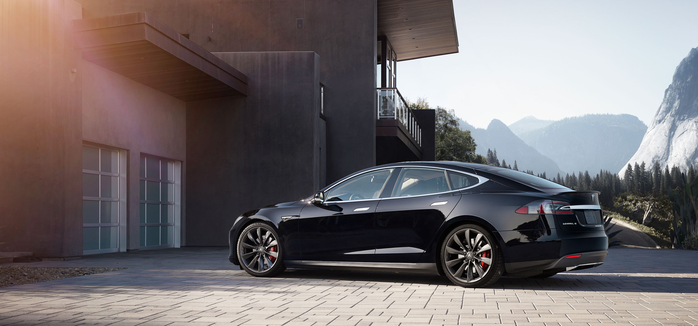
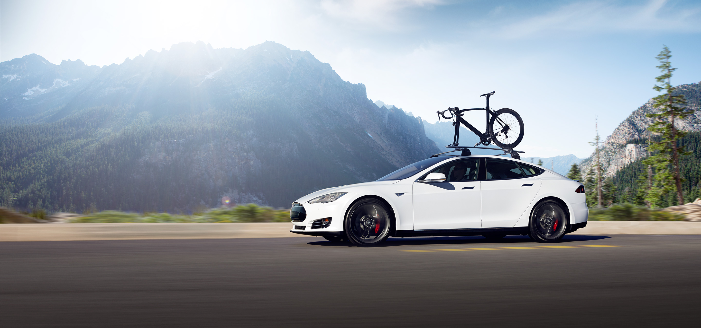
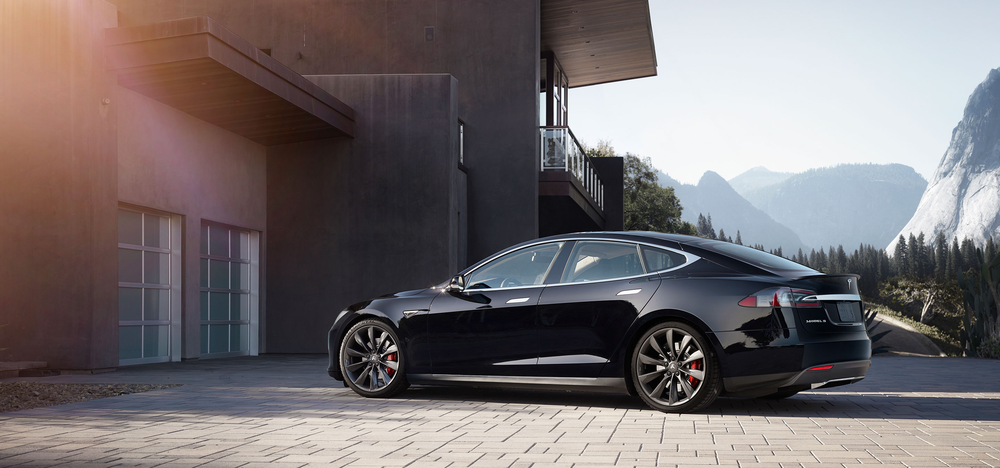
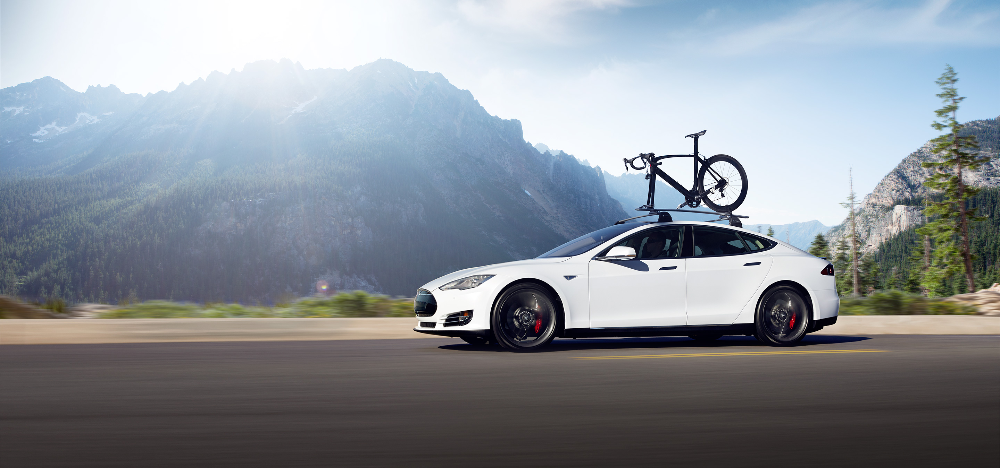

Tesla Motors, Inc. is an American company that designs, manufactures, and sells electric cars and electric vehicle powertrain components. Tesla Motors is a public company that trades on the NASDAQ stock exchange under the symbol TSLA. In the first quarter of 2013, Tesla posted profits for the first time in its history.
Tesla Motors first gained widespread attention following their production of the Tesla Roadster, the first fully electric sports car. The company's second vehicle is the Model S, a fully electric luxury sedan, and its third and fourth vehicles are the Models X and 3, respectively.

Roadster
The Roadster was the first production automobile to use lithium-ion battery cells and the first production all-electric to travel more than 200 miles (320 km) per charge. According to the U.S. EPA, the Roadster can travel 244 miles (393 km) on a single charge of its lithium-ion battery pack, and can accelerate from 0 to 60 mph (0 to 97 km/h) in 3.7 seconds. In March 2010, a Tesla Roadster became the first electric vehicle to win the Monte Carlo Alternative Energy Rally.
Since 2008 Tesla had sold more than 2,400 Roadsters in 31 countries through September 2012, and most of the remaining Tesla Roadsters were sold in Europe and Asia during the fourth quarter of 2012. The Roadster had a 2010 base price of $109,000 USD.
Model S
The Tesla Model S is a full-sized electric five-door, luxury liftback, produced by Tesla Motors. The Signature Performance model reaches 130 mph (210 km/h) and goes 0-60 mph in 4.2 seconds, while the 60 kWh base model's top speed is 120 mph (190 km/h), and it reaches 60 mph in 5.9 seconds. It scored a perfect 5.0 NHTSA safety rating. The US Environmental Protection Agency (EPA) official range for the Model S Performance model equipped with an 85 kWh battery pack is 265 miles (426 km), topping the Tesla Roadster to lead the electric car market. EPA rates its energy consumption at 237.5 Wh per kilometer (38 kWh/100 mi) for a combined fuel economy of 89 miles per gallon gasoline equivalent.
The Tesla Model S won awards such as the 2013 World Green Car of the Year, 2013 Motor Trend Car of the Year, Automobile Magazine's 2013 Car of the Year, Time Magazine Best 25 Inventions of the Year 2012 award and Consumer Reports' top-scoring car ever.

Model X
The Tesla Model X is a full-size crossover utility vehicle in development by Tesla Motors. The prototype was unveiled at Tesla's design studios in Los Angeles on February 9, 2012. The Model X is being developed from the full-size sedan platform of the Tesla Model S, and will be produced with it at the Tesla Factory in Fremont, California.
Production was initially scheduled to start by the end of 2013, and later postponed several times in order for the company to achieve Model S production targets and to focus on overseas roll outs. As of February 2014, the company expects to begin deliveries for retail customers in the second quarter of 2015.


 


